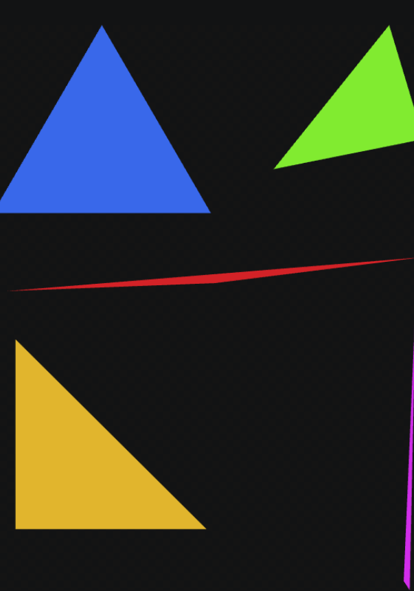
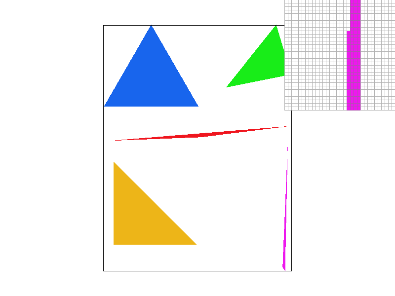
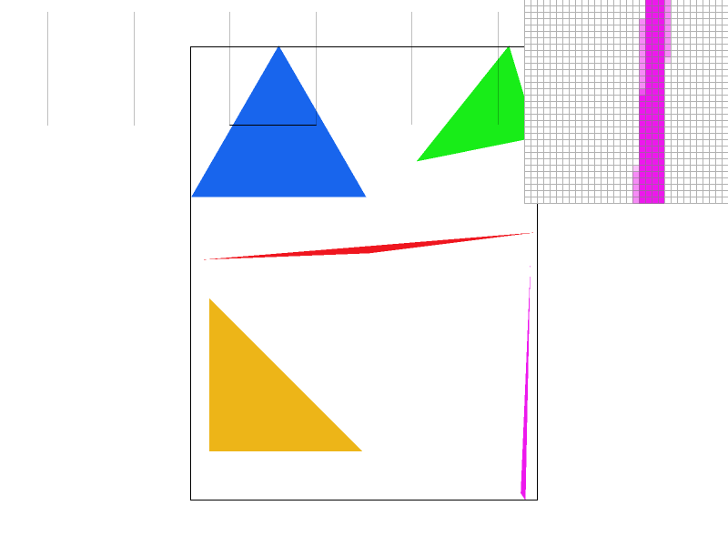
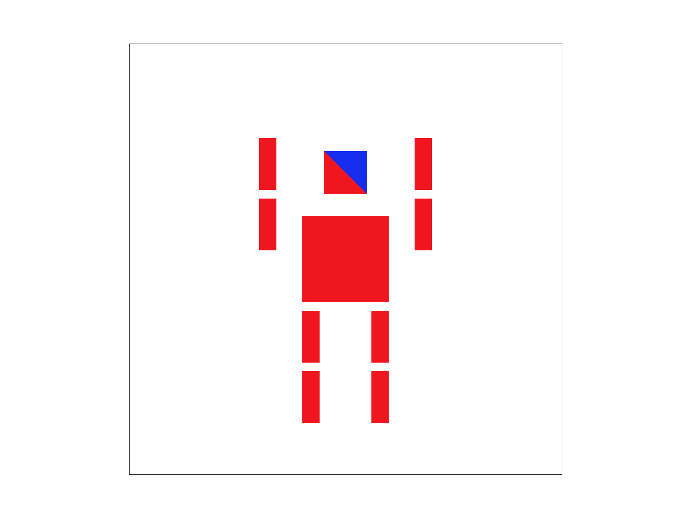
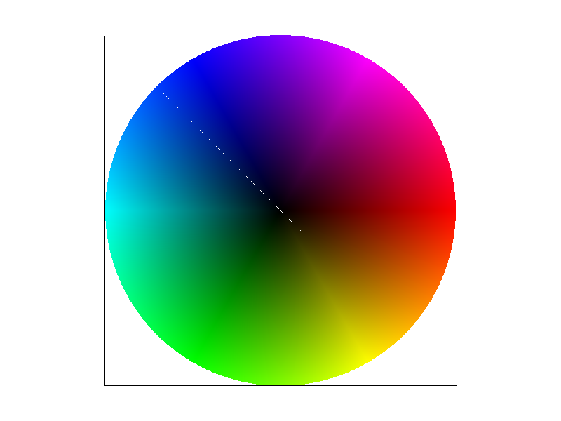
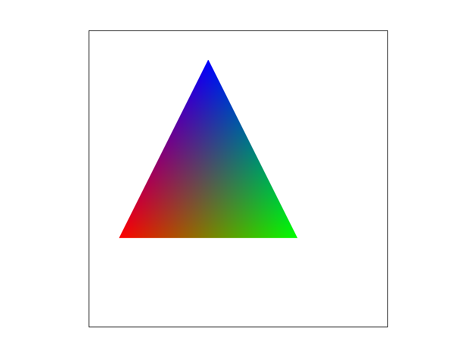
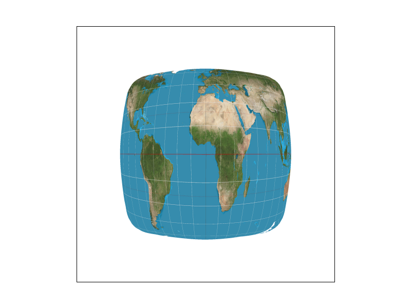

In this homework 1, I turned triangles into pixels displayed on the screen. Checking if points are inside or outside of a triangle, supersampling antialising, and using barycentric coordinates were all learned and used for this homework.
Task 1: Drawing Single-Color Triangles
I first wanted to find the smallest box to fit the triangle so I set the dimensions based off of the given points. Then for each pixel I looked at the center of the pixel to determine the pixel coverage. Then for each edge I get a value stating if the sample point of the pixel is on one side or another of a triangle edge and if it is on the same side of all three edges it is inside the triangle. And by taking in all values as either all negative or positive the ordering does not matter either clock wise or counter clockwise. My algorithm is no worse than checking every sample in the box as it does the same process but is cheaper per iteration in the loop except I am just incrementing e0-2 instead of recalculating them while still testing the same set of pixels. And I used the >= to handle pixels directly on the edge and get them colored.

Test4
Task 2: Antialiasing by Supersampling
Super sampling is useful in cases like the purple triangle where each pixel is tested at a singular point producing slanted lines that look like steps. Super sampling fixes this by testing multiple points per pixel and blending the results creating a smoother line. I changed sample_buffer from one color to sample_rate of colors per pixel which makes it a buffer so that was effectively blurring the image first. pixel (x, y) supersamples go into sample_rate starting at index sample_rate * (width * y + x). For what I changed in rasterize triangle, instead of testing the center of each pixel I now loop over a “sqrt_rate” sized grid of each pixel. I then do the inside outside test on the edges of the triangle with the sub points. As the sample rate increases there is a visible smoothing effect being applied to the purple line, this is due to the increased sampling points used to draw the line going from one per pixel in a 1x1 to 16 in a 4x4.

Sample Rate: 1.

Sample Rate: 4.
Sample Rate: 16.
Task 3: Transforms
I only did a few simple changes to the robot, I rotated both hands up and straightened out his head using the rotate 90 and 45 degree in the transform lines and also turned half of the robots head blue.

My modified robot
Task 4: Barycentric coordinates
Barycentric coordinates show a point inside the triangle as a combined value of three vertices weighted as alpha beta and gamma summing to one. While each weight shows how close the point is to the vertex and this can be 0-1 or in between. Then I just reused the same edge function from task 1 and used the weights to create the color.

Colorwheel.

My triangle.
Task 5: "Pixel sampling" for texture mapping
Pixel sampling determines the texture color at a given point on a triangle. Then I got each samples (u,v) texture coordinate using the known u and v and their weights to each vertex. Nearest neighbor rounds (u, v) to the closest texel and returns it directly which is fast but blocky when the texture is magnified it is only slightly better. Bilinear interpolation blends the four texels surrounding (u, v) based on fractional distance which gives a smoother result at 1 sample per pixel and is the best overall at 16 per pixel. My rasterizer picks which method to call for each sample based on the users input. The difference between nearest and bilinear is the most noticeable when a texel covers multiple pixels and at one texel per pixel the images will look much closer.
Nearest 1 sample.
Nearest 16 samples.

Bilinear 1 sample.
Bilinear 16 samples.
Task 6: "Level Sampling" with mipmaps for texture mapping
Level sampling picks the mipmap resolution to be used when texturing a pixel given the rate the texture is shrunken. I calculated this given each samples u and v and when comparing it to the u v of the pixel to the right and down by one pixel, the difference shows how many texels are in one pixel. I then scaled the difference by the textures height and width and using log2 convert the larger of the two into a mip level. Then, when lsm == L_ZERO, I use level 0, when lsm == L_NEAREST, I round the computed level to the nearest integer and sample only that level. And if lsm == L_LINEAR, I sample from both of the two adjacent integer levels and blend between them based on the proportion it is between them.
Level sampling has a high memory cost but the biggest antialiasing improvement on minified textures with a low cost of compute. While super sampling has a worse antialiasing at a higher compute cost per pixel but with the benefit of not needing the extra memory. And finally pixel sampling is fastest and cheapest but also looks very poor when zoomed in especially on diagonal lines.